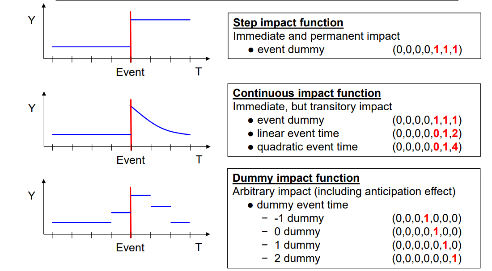
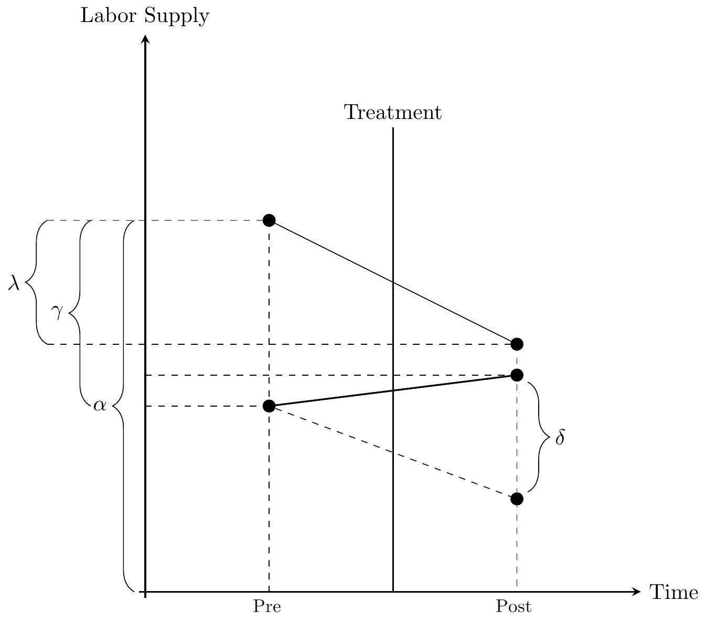

id year lnw exp expq marry evermarry enrol yeduc age cohort
1 1 1981 1.934358 1.076923 1.159763 0 1 1 11 18 1963
2 1 1983 2.468140 3.019231 9.115755 0 1 1 12 20 1963
3 1 1984 2.162480 4.038462 16.309174 0 1 1 12 21 1963
4 1 1985 1.746280 5.076923 25.775146 0 1 0 12 22 1963
5 1 1986 2.527840 6.096154 37.163090 0 1 1 13 23 1963
6 1 1987 2.365361 7.500000 56.250000 0 1 1 13 24 1963
yeargr yeargr1 yeargr2 yeargr3 yeargr4 yeargr5
1 2 0 1 0 0 0
2 2 0 1 0 0 0
3 2 0 1 0 0 0
4 2 0 1 0 0 0
5 3 0 0 1 0 0
6 3 0 0 1 0 0Panel Data Estimators 2
Tobias Ruttenauer
Dynamic treatment effects
The shape of treatment effects
Rüttenauer and Best (2021)
The shape of treatment effects
Zoch and Heyne (2023)
The shape of treatment effects

Clark and Georgellis (2013)
Event study design
Various impact functions for event study designs from Brüderl/Ludwig 2019 teaching materials. See also Ludwig and Brüderl (2021)
Event study design
For many research questions, treatment effects are likely to follow a temporal pattern rather than being uniform.
If there is a binary treatment indicator (e.g. marriage, childbirth), we can use impact functions (or count functions) around the onset of the treatment in twoway FE to investigate its temporal patterns (Ludwig and Brüderl 2021).
Example - Marriage and wage
Dummy impact function
# Order
mwp <- mwp[order(mwp$id, mwp$year),]
# Count since treatment by id
mwp$Treat_count <- ave(
mwp$marry,
mwp$id,
FUN = function(x)
cumsum(x)
)
# First treatment instance & distribute
mwp$Treat_first <- ifelse(mwp$Treat_count == 1,
mwp$year,
0)
mwp$Treat_first <- ave(mwp$Treat_first,
mwp$id,
FUN = max)Dummy impact function
# Order
mwp <- mwp[order(mwp$id, mwp$year),]
# Count since treatment by id
mwp$Treat_count <- ave(
mwp$marry,
mwp$id,
FUN = function(x)
cumsum(x)
)
# First treatment instance & distribute
mwp$Treat_first <- ifelse(mwp$Treat_count == 1,
mwp$year,
0)
mwp$Treat_first <- ave(mwp$Treat_first,
mwp$id,
FUN = max)Dummy impact function
# Create event time indicator
mwp$time_to_treatment <- mwp$year - mwp$Treat_first
# Define reference periods (use minus 2 to allow for anticipation in -1)
# control <- c(-2, min(mwp$time_to_treatment))
control <- c(-2)
mwp$time_to_treatment <-
ifelse(
mwp$time_to_treatment %in% control | mwp$Treat_first == 0,
-9999,
mwp$time_to_treatment
)
mwp$time_to_treatment <-
relevel(as.factor(mwp$time_to_treatment), "-9999")Dummy impact function
# Create event time indicator
mwp$time_to_treatment <- mwp$year - mwp$Treat_first
# Define reference periods (use minus 2 to allow for anticipation in -1)
# control <- c(-2, min(mwp$time_to_treatment))
control <- c(-2)
mwp$time_to_treatment <-
ifelse(
mwp$time_to_treatment %in% control | mwp$Treat_first == 0,
-9999,
mwp$time_to_treatment
)
mwp$time_to_treatment <-
relevel(as.factor(mwp$time_to_treatment), "-9999")Dummy impact function
# Create event time indicator
mwp$time_to_treatment <- mwp$year - mwp$Treat_first
# Define reference periods (use minus 2 to allow for anticipation in -1)
# control <- c(-2, min(mwp$time_to_treatment))
control <- c(-2)
mwp$time_to_treatment <-
ifelse(
mwp$time_to_treatment %in% control | mwp$Treat_first == 0,
-9999,
mwp$time_to_treatment
)
mwp$time_to_treatment <-
relevel(as.factor(mwp$time_to_treatment), "-9999")Dummy impact function
FE with Dummy impact function
### FE with dummy impact function
fe_dummy <-
plm(lnw ~ time_to_treatment + enrol + yeduc + exp + I(exp^2),
data = mwp,
model = "within",
effect = "twoways")
# add cluster robust SEs
vcovx_fe_dummy <-
vcovHC(fe_dummy,
cluster = "group",
method = "arellano",
type = "HC3")
fe_dummy$vcov <- vcovx_fe_dummyFE with Dummy impact function
### FE with dummy impact function
fe_dummy <-
plm(lnw ~ time_to_treatment + enrol + yeduc + exp + I(exp^2),
data = mwp,
model = "within",
effect = "twoways")
# add cluster robust SEs
vcovx_fe_dummy <-
vcovHC(fe_dummy,
cluster = "group",
method = "arellano",
type = "HC3")
fe_dummy$vcov <- vcovx_fe_dummyFE with Dummy impact function
Twoways effects Within Model
Call:
plm(formula = lnw ~ time_to_treatment + enrol + yeduc + exp +
I(exp^2), data = mwp, effect = "twoways", model = "within")
Unbalanced Panel: n = 268, T = 4-19, N = 3100
Residuals:
Min. 1st Qu. Median 3rd Qu. Max.
-2.5026439 -0.1550302 0.0078324 0.1732288 2.0689119
Coefficients:
Estimate Std. Error t-value Pr(>|t|)
time_to_treatment-19 -0.2545119 0.3197734 -0.7959 0.4261505
time_to_treatment-18 -0.7290596 0.2102088 -3.4683 0.0005318 ***
time_to_treatment-17 -0.0670156 0.1573872 -0.4258 0.6702857
time_to_treatment-16 -0.1049867 0.2313300 -0.4538 0.6499799
time_to_treatment-15 -0.1207496 0.1447592 -0.8341 0.4042730
time_to_treatment-14 -0.1645816 0.1450179 -1.1349 0.2565126
time_to_treatment-13 -0.2353898 0.0931669 -2.5265 0.0115744 *
time_to_treatment-12 -0.1645905 0.0940469 -1.7501 0.0802134 .
time_to_treatment-11 -0.1936489 0.0895855 -2.1616 0.0307334 *
time_to_treatment-10 -0.0798882 0.0834633 -0.9572 0.3385667
time_to_treatment-9 -0.2146613 0.0773115 -2.7766 0.0055303 **
time_to_treatment-8 -0.1260775 0.0651812 -1.9343 0.0531827 .
time_to_treatment-7 -0.0652457 0.0610401 -1.0689 0.2852082
time_to_treatment-6 -0.0240969 0.0516770 -0.4663 0.6410388
time_to_treatment-5 -0.0405286 0.0444550 -0.9117 0.3620179
time_to_treatment-4 -0.0495005 0.0406408 -1.2180 0.2233267
time_to_treatment-3 -0.0449544 0.0383303 -1.1728 0.2409696
time_to_treatment-1 0.0341265 0.0263220 1.2965 0.1949103
time_to_treatment0 0.0238765 0.0312467 0.7641 0.4448562
time_to_treatment1 0.0979309 0.0387631 2.5264 0.0115790 *
time_to_treatment2 0.1110830 0.0412254 2.6945 0.0070913 **
time_to_treatment3 0.1193417 0.0495054 2.4107 0.0159874 *
time_to_treatment4 0.0921361 0.0520111 1.7715 0.0765922 .
time_to_treatment5 0.0658393 0.0580900 1.1334 0.2571438
time_to_treatment6 0.0988637 0.0623235 1.5863 0.1127855
time_to_treatment7 0.0739871 0.0692210 1.0689 0.2852286
time_to_treatment8 0.1359779 0.0760370 1.7883 0.0738348 .
time_to_treatment9 0.0831122 0.0802180 1.0361 0.3002557
time_to_treatment10 0.0530242 0.1104720 0.4800 0.6312806
time_to_treatment11 0.1006348 0.0976293 1.0308 0.3027313
time_to_treatment12 0.1215560 0.1316073 0.9236 0.3557611
time_to_treatment13 0.1181285 0.1109439 1.0648 0.2870776
time_to_treatment14 0.1449415 0.1527482 0.9489 0.3427582
enrol -0.2065358 0.0276141 -7.4794 9.961e-14 ***
yeduc 0.0602555 0.0129976 4.6359 3.718e-06 ***
exp 0.1228576 0.0253533 4.8458 1.330e-06 ***
I(exp^2) -0.0022192 0.0008226 -2.6977 0.0070235 **
---
Signif. codes: 0 '***' 0.001 '**' 0.01 '*' 0.05 '.' 0.1 ' ' 1
Total Sum of Squares: 365.67
Residual Sum of Squares: 318.32
R-Squared: 0.12949
Adj. R-Squared: 0.028553
F-statistic: 7.31333 on 37 and 2777 DF, p-value: < 2.22e-16FE with Dummy impact function
Code
# Adjusting the results matrix setup to include all marcount levels
coef.df <- data.frame(time = factor(c(-4:7), levels = c(-4:7)),
# Include all levels as factors
att = NA,
se = NA)
# Extracting coefficients and SEs for marcount levels
output <- summary(fe_dummy)$coefficients
for (i in levels(coef.df$time)) {
coef_name <- paste0("time_to_treatment", i)
if (coef_name %in% rownames(output)) {
coef.df[coef.df$time == i, c("att", "se")] <- output[coef_name, 1:2]
}
}
# Fill reference category
coef.df$att[coef.df$time == control[1]] <- 0
coef.df$se[coef.df$time == control[1]] <- 0
coef.df$model <- "TWFE Event-Study Design"
coef.df$time2 <- as.numeric(as.character(coef.df$time))
# Calculate 95% CI
interval2 <- -qnorm((1 - 0.95) / 2)
coef.df$ll <- coef.df$att - coef.df$se * interval2
coef.df$ul <- coef.df$att + coef.df$se * interval2
# Pre vs post
coef.df$post <- ifelse(coef.df$time2 >= 0, 1, 0)
coef.df$post <- factor(coef.df$post, labels = c("Before treatment",
"After treatment"))
# Plot
zp <- ggplot(coef.df, aes(x = time, y = att)) +
geom_hline(yintercept = 0) +
geom_vline(xintercept = 4.5, linetype = "dashed") +
geom_pointrange(data = coef.df,
aes(
x = time,
y = att,
ymin = ll,
ymax = ul,
color = post,
shape = post
)) +
scale_color_viridis_d(
option = "B",
end = 0.80,
begin = 0.2,
direction = -1
) +
theme_minimal() + theme(
panel.grid.minor = element_blank(),
text = element_text(family = "Times New Roman", size = 16),
axis.text = element_text(colour = "black"),
legend.position = "bottom",
legend.title = element_blank()
) +
scale_x_discrete() +
labs(x = "Event time (Year of marriage = 0)",
y = paste0("Effect on ln Wage"))
zpDynamic Diff-in-Diff - the problem
Diff-in-Diff
Diff-in-Diff design, adopted from Cunningham (2021)
Diff-in-Diff
The difference-in-differences (Diff-in-Diff) design is a simple yet powerful approach to evaluating the impact of a treatment in a panel data setting. In its basic form, the \(2 \times 2\) Diff-in-Diff estimator involves two groupstreatment (\(T\)) and control (\(C\))observed at two time points, before and after the treatment.
In this setup, the treatment is uniform across observations and occurs at the same time. Diff-in-Diff is thus equivalent to two-ways FE.
Diff-in-Diff
The situation becomes more intricate with multiple time periods and when the treatment timing varies and when treatment effects are dynamic - i.e they follow a temporal pattern.
Several econometric papers on this topic (Borusyak, Jaravel, and Spiess 2023; Callaway and SantAnna 2021; De Chaisemartin and DHaultfuille 2020; Goodman-Bacon 2021; Sun and Abraham 2021) have recently changed peoples (or at least economists) views on twoway FE.
FE and Diff-in-Diff
With multiple time-periods, Goodman-Bacon (2021) has demonstrated that Twoway Fixed Effects (TWFE) can be seen as a weighted average of all possible \(2 \times 2\) Diff-in-Diff estimators.
The weights are influenced by
the group size
treatment variance within each subgroup (how long we observe each combination before and after treatment)
FE and Diff-in-Diff
In many settings particularly when treatment effects are homogeneous, which would be the case if all individuals experience the same static treatment effect this is not a problem at all. TWFE will give the correct results.
However, two-way FE may produce biased results when treatment effects are dynamic over time and treatment timing varies (Roth et al. 2023).
Whats the problem?
Trend-breaking treatment
Whats the problem?
Inverse U-shaped treatment
The forbidden comparison
Forbidden comparison
Dynamic Diff-in-Diff - a solution
Potential solutions
Several authors have proposed solutions (Callaway and SantAnna 2021; De Chaisemartin and DHaultfuille 2020; Borusyak, Jaravel, and Spiess 2023; Sun and Abraham 2021; Wooldridge 2021) by using dynamic Difference-in-Differences estimators.
For a review of these estimators, see, for instance, Roth et al. (2023) or Ruttenauer.2024.
Potential solutions
The idea of these estimators can be described as (parametrically or non-parametrically) estimating several \(2 \times 2\) Diff-in-Diffs.
In a multi-group and heterogeneous treatment-timing setting, we compute group-time average treatment effects by grouping all treatment units that receive treatment at the same period into a common group \(g\).
Dynamic Diff-in-Diff
For each treatment group \(g\) and time period \(t\), we estimate group-specific and time-specific ATTs:
\[ \begin{align} \delta_{g,t} & = \mathrm{E}(\Delta y_{g}) - \mathrm{E}(\Delta y_{C})\\ &= (\mathrm{E}(y_{g}^{t}) - \mathrm{E}(y_{g}^{g-1})) - (\mathrm{E}(y_{C}^{t}) - \mathrm{E}(y_{C}^{g-1})), \end{align} \]
where the control group can either be the never-treated or the not-yet-treated.
Dynamic Diff-in-Diff
Estimator by Callaway and SantAnna (2021)
Time-specific averages
This obviously yields a large number of different treatment effects. But we can combine them, e.g. by
\[ \theta_D(e) := \sum_{g=1}^G \mathbf{1} \{ g + e \leq T \} \delta(g,g+e) P(G=g | G+e \leq T), \]
where \(e\) specifies for how long a unit has been exposed to the treatment. It is basically the average effects across all treatment-timing groups at the period \(e\) after treatment.
Assumptions
Staggered treatment adoption: once treated, a unit remains treated
Parallel trends assumption
based on never-treated (very strong)
based on not-yet-treated (a bit more likely)
- No treatment anticipation
based on never-treated (a bit more likely)
based on not-yet-treated (very strong)
Assumptions
Trade-off: If assumption 2) is likely to hold, we can use only the never-treated as controls to relax assumption 3). If assumption 3) is likely to hold, we can include the not-yet-treated as control to relax assumption 2).
Dynamic Diff-in-Diff
Note
The estimator of Callaway and SantAnna (2021) uses a single period before treatment (by default its the year before treatment) as pre-treatment period for many \(2\times 2\) Diff-in-Diff estimators. The estimator is thus sensitive to anticipation.
In contrast, Borusyak, Jaravel, and Spiess (2023) uses all pre-treatment periods as control periods. It thus less sensitive to anticipation, but more sensitive to violations of parallel trends.
Example - Marriage and wage
As an example, we use the mwp panel data, containing information on wages and family status of 268 men.
We exemplary investigate the marriage wage premium: we analyse whether marriage leads to an increase in the hourly wage for men.
Example - Marriage and wage
id year lnw exp expq marry evermarry enrol yeduc age cohort
1 1 1981 1.934358 1.076923 1.159763 0 1 1 11 18 1963
2 1 1983 2.468140 3.019231 9.115755 0 1 1 12 20 1963
3 1 1984 2.162480 4.038462 16.309174 0 1 1 12 21 1963
4 1 1985 1.746280 5.076923 25.775146 0 1 0 12 22 1963
5 1 1986 2.527840 6.096154 37.163090 0 1 1 13 23 1963
6 1 1987 2.365361 7.500000 56.250000 0 1 1 13 24 1963
yeargr yeargr1 yeargr2 yeargr3 yeargr4 yeargr5
1 2 0 1 0 0 0
2 2 0 1 0 0 0
3 2 0 1 0 0 0
4 2 0 1 0 0 0
5 3 0 0 1 0 0
6 3 0 0 1 0 0Example - Marriage and wage
# treatment timing = year if married
mwp$treat_timing <- ifelse(mwp$marry == 1, mwp$year, NA)
# set never treated to zero
mwp$treat_timing[mwp$evermarry == 0] <- 0
# if married is not NA, used min year per id (removing NAs)
mwp$treat_timing[!is.na(mwp$marry)] <- ave(mwp$treat_timing[!is.na(mwp$marry)],
mwp$id[!is.na(mwp$marry)],
FUN = function(x) min(x, na.rm = TRUE))Example - Marriage and wage
# treatment timing = year if married
mwp$treat_timing <- ifelse(mwp$marry == 1, mwp$year, NA)
# set never treated to zero
mwp$treat_timing[mwp$evermarry == 0] <- 0
# if married is not NA, used min year per id (removing NAs)
mwp$treat_timing[!is.na(mwp$marry)] <- ave(mwp$treat_timing[!is.na(mwp$marry)],
mwp$id[!is.na(mwp$marry)],
FUN = function(x) min(x, na.rm = TRUE))Example - Marriage and wage
# treatment timing = year if married
mwp$treat_timing <- ifelse(mwp$marry == 1, mwp$year, NA)
# set never treated to zero
mwp$treat_timing[mwp$evermarry == 0] <- 0
# if married is not NA, used min year per id (removing NAs)
mwp$treat_timing[!is.na(mwp$marry)] <- ave(mwp$treat_timing[!is.na(mwp$marry)],
mwp$id[!is.na(mwp$marry)],
FUN = function(x) min(x, na.rm = TRUE))Example - Marriage and wage
id year marry evermarry treat_timing
1 1 1981 0 1 1988
2 1 1983 0 1 1988
3 1 1984 0 1 1988
4 1 1985 0 1 1988
5 1 1986 0 1 1988
6 1 1987 0 1 1988
7 1 1988 1 1 1988
8 1 1989 1 1 1988
9 1 1990 1 1 1988
10 1 1991 1 1 1988
11 1 1992 1 1 1988
12 2 1979 0 0 0
13 2 1981 0 0 0
14 2 1982 0 0 0
15 2 1983 0 0 0
16 2 1984 0 0 0
17 2 1985 0 0 0
18 2 1989 0 0 0
19 3 1979 0 0 0
20 3 1980 0 0 0
21 3 1981 0 0 0
22 3 1982 0 0 0
23 3 1983 0 0 0
24 3 1984 0 0 0
25 3 1985 0 0 0
26 3 1986 0 0 0
27 3 1987 0 0 0
28 3 1988 0 0 0
29 3 1989 0 0 0
30 3 1993 0 0 0
31 3 1994 0 0 0
32 3 2000 0 0 0
33 4 1979 0 1 1982
34 4 1981 0 1 1982
35 4 1982 1 1 1982Example - Marriage and wage
Using the package did.
library(did)
# estimate group-time average treatment effects using att_gt method
wages.attgt <- att_gt(yname = "lnw",
tname = "year",
idname = "id",
gname = "treat_timing",
xformla = ~ enrol + yeduc + exp + I(exp^2), # note that we omit the yeargroup here
data = mwp,
control_group = "notyettreated",
anticipation = 0,
allow_unbalanced_panel = TRUE,
est_method = "ipw"
)Example - Marriage and wage
Using the package did.
library(did)
# estimate group-time average treatment effects using att_gt method
wages.attgt <- att_gt(yname = "lnw",
tname = "year",
idname = "id",
gname = "treat_timing",
xformla = ~ enrol + yeduc + exp + I(exp^2), # note that we omit the yeargroup here
data = mwp,
control_group = "notyettreated",
anticipation = 0,
allow_unbalanced_panel = TRUE,
est_method = "ipw",
)Example - Marriage and wage
Using the package did.
library(did)
# estimate group-time average treatment effects using att_gt method
wages.attgt <- att_gt(yname = "lnw",
tname = "year",
idname = "id",
gname = "treat_timing",
xformla = ~ enrol + yeduc + exp + I(exp^2), # note that we omit the yeargroup here
data = mwp,
control_group = "notyettreated",
anticipation = 0,
allow_unbalanced_panel = TRUE,
est_method = "ipw"
)Example - Marriage and wage
Using the package did.
library(did)
# estimate group-time average treatment effects using att_gt method
wages.attgt <- att_gt(yname = "lnw",
tname = "year",
idname = "id",
gname = "treat_timing",
xformla = ~ enrol + yeduc + exp + I(exp^2), # note that we omit the yeargroup here
data = mwp,
control_group = "notyettreated",
anticipation = 0,
allow_unbalanced_panel = TRUE,
est_method = "ipw"
)Example - Marriage and wage
Using the package did.
library(did)
# estimate group-time average treatment effects using att_gt method
wages.attgt <- att_gt(yname = "lnw",
tname = "year",
idname = "id",
gname = "treat_timing",
xformla = ~ enrol + yeduc + exp + I(exp^2), # note that we omit the yeargroup here
data = mwp,
control_group = "notyettreated",
anticipation = 0,
allow_unbalanced_panel = TRUE,
est_method = "ipw"
)Example - Marriage and wage
And we get a lot of individual treatment effects.
Call:
att_gt(yname = "lnw", tname = "year", idname = "id", gname = "treat_timing",
xformla = ~enrol + yeduc + exp + I(exp^2), data = mwp, allow_unbalanced_panel = TRUE,
control_group = "notyettreated", anticipation = 0, est_method = "ipw")
Reference: Callaway, Brantly and Pedro H.C. Sant'Anna. "Difference-in-Differences with Multiple Time Periods." Journal of Econometrics, Vol. 225, No. 2, pp. 200-230, 2021. <https://doi.org/10.1016/j.jeconom.2020.12.001>, <https://arxiv.org/abs/1803.09015>
Group-Time Average Treatment Effects:
Group Time ATT(g,t) Std. Error [95% Simult. Conf. Band]
1980 1980 0.0628 0.1690 -0.5946 0.7201
1980 1981 0.0681 0.2408 -0.8684 1.0045
1980 1982 0.1250 0.1628 -0.5082 0.7582
1980 1983 -0.0151 0.2608 -1.0295 0.9993
1980 1984 0.1353 0.1339 -0.3854 0.6560
1980 1985 0.1432 0.1169 -0.3116 0.5980
1980 1986 -0.0074 0.1270 -0.5012 0.4864
1980 1987 -0.0201 0.1473 -0.5928 0.5526
1980 1988 -0.2640 0.1727 -0.9357 0.4077
1980 1989 -0.2268 0.2088 -1.0386 0.5851
1980 1990 -0.1624 0.2171 -1.0067 0.6819
1980 1991 -0.0230 0.2056 -0.8226 0.7766
1980 1992 -0.0751 0.2747 -1.1435 0.9933
1980 1993 0.1777 0.3040 -1.0045 1.3598
1980 1994 -0.4508 0.2014 -1.2339 0.3322
1980 1996 NA NA NA NA
1980 1998 NA NA NA NA
1980 2000 NA NA NA NA
1981 1980 -0.1158 0.1173 -0.5721 0.3405
1981 1981 0.1273 0.0867 -0.2099 0.4646
1981 1982 0.1400 0.1286 -0.3601 0.6400
1981 1983 0.0047 0.1308 -0.5041 0.5134
1981 1984 0.0331 0.1439 -0.5264 0.5926
1981 1985 -0.0885 0.1397 -0.6318 0.4549
1981 1986 -0.1176 0.1157 -0.5676 0.3325
1981 1987 -0.0066 0.1353 -0.5327 0.5195
1981 1988 -0.1238 0.1344 -0.6463 0.3988
1981 1989 -0.1627 0.1416 -0.7133 0.3879
1981 1990 -0.0647 0.1539 -0.6631 0.5337
1981 1991 -0.0346 0.1504 -0.6195 0.5503
1981 1992 0.0308 0.1264 -0.4608 0.5224
1981 1993 0.3283 0.2522 -0.6526 1.3092
1981 1994 -0.2639 0.2914 -1.3970 0.8692
1981 1996 NA NA NA NA
1981 1998 NA NA NA NA
1981 2000 NA NA NA NA
1982 1980 -0.1537 0.2019 -0.9387 0.6313
1982 1981 0.3496 0.1522 -0.2424 0.9415
1982 1982 0.1904 0.1676 -0.4616 0.8424
1982 1983 0.2862 0.1478 -0.2884 0.8608
1982 1984 0.0737 0.1631 -0.5608 0.7082
1982 1985 0.3109 0.1687 -0.3453 0.9671
1982 1986 0.0330 0.2034 -0.7578 0.8239
1982 1987 0.2263 0.2035 -0.5652 1.0177
1982 1988 0.0867 0.1926 -0.6624 0.8358
1982 1989 0.2918 0.2187 -0.5588 1.1423
1982 1990 0.1162 0.1954 -0.6439 0.8763
1982 1991 0.3624 0.1752 -0.3191 1.0440
1982 1992 0.3762 0.1988 -0.3971 1.1495
1982 1993 0.4379 0.1732 -0.2355 1.1113
1982 1994 NA NA NA NA
1982 1996 NA NA NA NA
1982 1998 NA NA NA NA
1982 2000 NA NA NA NA
1983 1980 0.0591 0.0932 -0.3033 0.4215
1983 1981 -0.0588 0.0843 -0.3867 0.2692
1983 1982 0.0991 0.0791 -0.2085 0.4067
1983 1983 -0.0406 0.1007 -0.4321 0.3509
1983 1984 -0.0747 0.0974 -0.4534 0.3040
1983 1985 -0.0342 0.1076 -0.4528 0.3844
1983 1986 0.0187 0.1334 -0.5000 0.5374
1983 1987 0.0200 0.1697 -0.6400 0.6800
1983 1988 -0.2116 0.1547 -0.8131 0.3899
1983 1989 -0.1602 0.1412 -0.7094 0.3890
1983 1990 -0.2118 0.1447 -0.7745 0.3509
1983 1991 -0.0767 0.1579 -0.6910 0.5376
1983 1992 -0.0682 0.1686 -0.7239 0.5875
1983 1993 0.0888 0.1998 -0.6884 0.8661
1983 1994 -0.0085 0.2663 -1.0441 1.0270
1983 1996 0.0266 0.2167 -0.8160 0.8693
1983 1998 NA NA NA NA
1983 2000 NA NA NA NA
1984 1980 0.2117 0.0777 -0.0906 0.5140
1984 1981 -0.1813 0.2084 -0.9918 0.6292
1984 1982 0.5052 0.2123 -0.3206 1.3310
1984 1983 -0.1515 0.1228 -0.6292 0.3262
1984 1984 -0.2544 0.3507 -1.6183 1.1096
1984 1985 0.1233 0.1186 -0.3382 0.5847
1984 1986 0.1043 0.1556 -0.5007 0.7092
1984 1987 -0.0683 0.2680 -1.1107 0.9741
1984 1988 0.0827 0.2565 -0.9147 1.0800
1984 1989 0.1216 0.1035 -0.2811 0.5243
1984 1990 0.1437 0.1522 -0.4484 0.7357
1984 1991 0.2312 0.1113 -0.2018 0.6642
1984 1992 0.3085 0.1271 -0.1856 0.8026
1984 1993 0.2173 0.1503 -0.3673 0.8020
1984 1994 0.1435 0.2357 -0.7732 1.0601
1984 1996 0.1999 0.1867 -0.5264 0.9261
1984 1998 0.1773 0.1909 -0.5651 0.9196
1984 2000 NA NA NA NA
1985 1980 0.0090 0.1841 -0.7069 0.7248
1985 1981 -0.0647 0.1437 -0.6236 0.4942
1985 1982 0.0360 0.1258 -0.4534 0.5254
1985 1983 -0.0195 0.0827 -0.3413 0.3023
1985 1984 -0.0100 0.0893 -0.3574 0.3373
1985 1985 -0.0587 0.0632 -0.3044 0.1870
1985 1986 0.0078 0.0899 -0.3416 0.3573
1985 1987 0.0363 0.1128 -0.4023 0.4750
1985 1988 0.0500 0.1110 -0.3819 0.4818
1985 1989 0.0450 0.1348 -0.4792 0.5692
1985 1990 0.0118 0.1582 -0.6034 0.6270
1985 1991 0.0156 0.1647 -0.6250 0.6563
1985 1992 0.1572 0.1872 -0.5710 0.8854
1985 1993 0.3310 0.2150 -0.5053 1.1673
1985 1994 0.1684 0.2285 -0.7201 1.0569
1985 1996 -0.1248 0.1997 -0.9014 0.6517
1985 1998 0.0818 0.2848 -1.0260 1.1895
1985 2000 NA NA NA NA
1986 1980 -0.0429 0.1844 -0.7598 0.6741
1986 1981 0.1229 0.1807 -0.5798 0.8255
1986 1982 -0.0840 0.1613 -0.7114 0.5434
1986 1983 -0.1743 0.1228 -0.6518 0.3033
1986 1984 0.0168 0.1721 -0.6523 0.6859
1986 1985 -0.0209 0.0892 -0.3677 0.3260
1986 1986 -0.1674 0.0887 -0.5122 0.1774
1986 1987 0.0071 0.0987 -0.3767 0.3909
1986 1988 0.0217 0.1200 -0.4450 0.4884
1986 1989 -0.3083 0.1640 -0.9460 0.3295
1986 1990 -0.1437 0.1498 -0.7264 0.4389
1986 1991 -0.1661 0.1747 -0.8457 0.5135
1986 1992 -0.1334 0.1857 -0.8558 0.5889
1986 1993 -0.2491 0.2422 -1.1910 0.6929
1986 1994 -0.1565 0.2762 -1.2305 0.9175
1986 1996 -0.3710 0.4064 -1.9515 1.2096
1986 1998 -0.5051 0.5762 -2.7458 1.7356
1986 2000 0.1671 0.2829 -0.9330 1.2672
1987 1980 -0.1499 0.1365 -0.6806 0.3808
1987 1981 -0.0861 0.1340 -0.6074 0.4352
1987 1982 -0.2023 0.1567 -0.8119 0.4073
1987 1983 -0.0348 0.0956 -0.4066 0.3370
1987 1984 0.0346 0.1856 -0.6872 0.7565
1987 1985 0.3917 0.1540 -0.2072 0.9906
1987 1986 0.1063 0.0938 -0.2586 0.4711
1987 1987 -0.1017 0.1504 -0.6865 0.4831
1987 1988 -0.0890 0.1157 -0.5389 0.3610
1987 1989 -0.0433 0.1228 -0.5209 0.4342
1987 1990 -0.0770 0.1321 -0.5909 0.4369
1987 1991 0.0139 0.1144 -0.4311 0.4589
1987 1992 0.0731 0.1260 -0.4169 0.5632
1987 1993 0.1278 0.1534 -0.4687 0.7244
1987 1994 0.0566 0.1800 -0.6434 0.7566
1987 1996 -0.0039 0.1369 -0.5364 0.5286
1987 1998 0.1258 0.1546 -0.4755 0.7271
1987 2000 -0.0260 0.1795 -0.7242 0.6721
1988 1980 0.1570 0.2595 -0.8522 1.1662
1988 1981 0.1641 0.1469 -0.4073 0.7354
1988 1982 0.0364 0.1513 -0.5520 0.6248
1988 1983 0.0070 0.1286 -0.4931 0.5071
1988 1984 0.0171 0.1094 -0.4083 0.4424
1988 1985 0.1447 0.0970 -0.2324 0.5217
1988 1986 -0.1751 0.1335 -0.6944 0.3442
1988 1987 -0.0276 0.0874 -0.3676 0.3123
1988 1988 0.1595 0.0752 -0.1331 0.4521
1988 1989 0.3571 0.1307 -0.1511 0.8652
1988 1990 0.3325 0.1058 -0.0788 0.7438
1988 1991 0.3761 0.1045 -0.0305 0.7826
1988 1992 0.2665 0.1210 -0.2041 0.7372
1988 1993 0.3551 0.1262 -0.1358 0.8459
1988 1994 0.2795 0.1781 -0.4130 0.9720
1988 1996 0.2654 0.1337 -0.2544 0.7853
1988 1998 0.0533 0.2577 -0.9490 1.0555
1988 2000 0.0759 0.1335 -0.4431 0.5949
1989 1980 0.0952 0.1795 -0.6029 0.7932
1989 1981 -0.2540 0.2641 -1.2810 0.7731
1989 1982 0.1641 0.2530 -0.8197 1.1479
1989 1983 -0.0201 0.2687 -1.0651 1.0249
1989 1984 -0.0434 0.1051 -0.4520 0.3653
1989 1985 -0.3140 0.2197 -1.1686 0.5405
1989 1986 0.0050 0.2733 -1.0577 1.0677
1989 1987 -0.0560 0.1514 -0.6447 0.5327
1989 1988 0.1015 0.1170 -0.3534 0.5565
1989 1989 -0.0139 0.1021 -0.4109 0.3831
1989 1990 -0.0121 0.1126 -0.4501 0.4259
1989 1991 0.0195 0.1511 -0.5680 0.6070
1989 1992 0.2149 0.2782 -0.8669 1.2968
1989 1993 -0.0986 0.1913 -0.8427 0.6454
1989 1994 0.0843 0.2755 -0.9871 1.1557
1989 1996 0.0821 0.3902 -1.4352 1.5995
1989 1998 0.2027 0.2909 -0.9285 1.3339
1989 2000 -0.0984 0.3936 -1.6291 1.4322
1990 1980 0.1804 0.2916 -0.9537 1.3146
1990 1981 0.0157 0.2262 -0.8639 0.8952
1990 1982 -0.2091 0.3064 -1.4008 0.9826
1990 1983 0.4847 0.1985 -0.2874 1.2567
1990 1984 0.5393 0.2601 -0.4723 1.5509
1990 1985 -0.5270 0.2058 -1.3274 0.2734
1990 1986 -0.2090 0.1864 -0.9338 0.5158
1990 1987 0.0020 0.1918 -0.7438 0.7479
1990 1988 0.0803 0.3348 -1.2216 1.3822
1990 1989 0.0610 0.3100 -1.1447 1.2668
1990 1990 0.1029 0.2335 -0.8053 1.0111
1990 1991 0.1069 0.4013 -1.4540 1.6677
1990 1992 0.2921 0.2433 -0.6542 1.2384
1990 1993 0.3636 0.4357 -1.3308 2.0581
1990 1994 0.2978 0.4146 -1.3145 1.9101
1990 1996 0.2712 0.3584 -1.1225 1.6648
1990 1998 0.3685 0.3779 -1.1011 1.8381
1990 2000 0.2603 0.4684 -1.5615 2.0821
1991 1980 0.1241 0.2993 -1.0399 1.2881
1991 1981 0.2311 0.1437 -0.3278 0.7900
1991 1982 -0.3164 0.2366 -1.2366 0.6038
1991 1983 0.1718 0.1925 -0.5769 0.9205
1991 1984 -0.3008 0.1375 -0.8355 0.2338
1991 1985 0.3180 0.2224 -0.5469 1.1829
1991 1986 0.0717 0.2471 -0.8895 1.0328
1991 1987 0.0132 0.2540 -0.9746 1.0010
1991 1988 0.0872 0.1641 -0.5509 0.7253
1991 1989 -0.1509 0.1854 -0.8720 0.5702
1991 1990 0.2471 0.1382 -0.2903 0.7844
1991 1991 -0.0288 0.1050 -0.4370 0.3794
1991 1992 -0.0136 0.1481 -0.5898 0.5626
1991 1993 -0.0463 0.1470 -0.6180 0.5254
1991 1994 -0.1002 0.1892 -0.8361 0.6357
1991 1996 -0.2419 0.1930 -0.9924 0.5086
1991 1998 -0.1121 0.1822 -0.8208 0.5965
1991 2000 -0.3106 0.2125 -1.1372 0.5159
1992 1980 0.0325 0.1839 -0.6825 0.7476
1992 1981 -0.0126 0.1975 -0.7808 0.7556
1992 1982 0.2404 0.1554 -0.3638 0.8445
1992 1983 -0.0186 0.1240 -0.5010 0.4638
1992 1984 -0.1611 0.1128 -0.5998 0.2777
1992 1985 0.0593 0.1845 -0.6581 0.7767
1992 1986 -0.0964 0.1833 -0.8092 0.6165
1992 1987 -0.0754 0.2528 -1.0584 0.9076
1992 1988 0.1278 0.1287 -0.3729 0.6285
1992 1989 -0.0637 0.0799 -0.3745 0.2472
1992 1990 0.1368 0.1174 -0.3198 0.5934
1992 1991 0.1333 0.1393 -0.4086 0.6751
1992 1992 0.1362 0.0906 -0.2161 0.4885
1992 1993 -0.0629 0.1543 -0.6631 0.5372
1992 1994 -0.0726 0.1494 -0.6537 0.5085
1992 1996 -0.1803 0.1982 -0.9511 0.5906
1992 1998 -0.0575 0.2097 -0.8729 0.7579
1992 2000 -0.1101 0.1589 -0.7282 0.5081
1993 1980 0.1776 0.1233 -0.3018 0.6570
1993 1981 -0.1647 0.0678 -0.4284 0.0990
1993 1982 -0.2508 0.2261 -1.1300 0.6284
1993 1983 0.5942 0.2798 -0.4941 1.6825
1993 1984 -0.2296 0.1441 -0.7900 0.3309
1993 1985 0.3973 0.2519 -0.5823 1.3770
1993 1986 0.0952 0.3361 -1.2119 1.4023
1993 1987 -0.0469 0.2647 -1.0764 0.9826
1993 1988 -0.0738 0.1063 -0.4873 0.3398
1993 1989 0.0560 0.1030 -0.3444 0.4563
1993 1990 -0.0782 0.0829 -0.4006 0.2442
1993 1991 -0.0049 0.0906 -0.3571 0.3473
1993 1992 -0.0107 0.1578 -0.6243 0.6030
1993 1993 -0.1082 0.1731 -0.7815 0.5651
1993 1994 -0.1348 0.1811 -0.8392 0.5697
1993 1996 0.0149 0.1633 -0.6200 0.6498
1993 1998 -0.0602 0.1988 -0.8333 0.7130
1993 2000 -0.2439 0.2365 -1.1636 0.6758
1994 1980 NA NA NA NA
1994 1981 0.2285 0.0973 -0.1500 0.6069
1994 1982 -0.1200 0.1018 -0.5160 0.2760
1994 1983 0.2712 0.1004 -0.1192 0.6616
1994 1984 -0.3439 0.0636 -0.5912 -0.0965 *
1994 1985 -0.1302 0.1626 -0.7625 0.5021
1994 1986 0.2635 0.2983 -0.8968 1.4237
1994 1987 0.1851 0.3371 -1.1258 1.4961
1994 1988 0.2031 0.1075 -0.2149 0.6211
1994 1989 -0.0582 0.1309 -0.5673 0.4509
1994 1990 -0.0163 0.1123 -0.4530 0.4204
1994 1991 0.1098 0.0690 -0.1587 0.3784
1994 1992 0.3781 0.1290 -0.1236 0.8797
1994 1993 -0.3599 0.3028 -1.5376 0.8177
1994 1994 -0.0310 0.2837 -1.1343 1.0723
1994 1996 0.0600 0.1719 -0.6084 0.7284
1994 1998 -0.2455 0.2852 -1.3546 0.8637
1994 2000 -0.6118 0.3092 -1.8144 0.5907
1996 1980 -0.4663 0.2751 -1.5363 0.6038
1996 1981 0.1813 0.1667 -0.4671 0.8297
1996 1982 -0.0115 0.1700 -0.6728 0.6498
1996 1983 -0.3838 0.2465 -1.3423 0.5746
1996 1984 0.2542 0.1313 -0.2564 0.7647
1996 1985 -0.0829 0.2265 -0.9637 0.7978
1996 1986 -0.1070 0.3029 -1.2848 1.0708
1996 1987 0.4484 0.3408 -0.8769 1.7737
1996 1988 -0.5384 0.3408 -1.8639 0.7871
1996 1989 0.3131 0.2460 -0.6437 1.2700
1996 1990 -0.1585 0.1871 -0.8862 0.5692
1996 1991 -0.1210 0.1337 -0.6411 0.3992
1996 1992 -0.0861 0.2560 -1.0818 0.9096
1996 1993 0.3078 0.3819 -1.1773 1.7928
1996 1994 -0.2208 0.3795 -1.6965 1.2550
1996 1996 0.4384 0.2608 -0.5759 1.4526
1996 1998 0.0598 0.2138 -0.7717 0.8912
1996 2000 -0.1224 0.2689 -1.1682 0.9234
1998 1980 -0.3103 0.1288 -0.8110 0.1904
1998 1981 0.2343 0.1191 -0.2287 0.6973
1998 1982 0.2493 0.1594 -0.3705 0.8691
1998 1983 -0.1420 0.1760 -0.8264 0.5423
1998 1984 0.0598 0.1118 -0.3748 0.4945
1998 1985 -0.2475 0.1041 -0.6523 0.1573
1998 1986 0.4092 0.1597 -0.2121 1.0304
1998 1987 -0.1969 0.1527 -0.7907 0.3970
1998 1988 0.3569 0.1088 -0.0663 0.7801
1998 1989 -0.1676 0.4304 -1.8414 1.5062
1998 1990 -0.2315 0.3589 -1.6273 1.1643
1998 1991 0.1584 0.1582 -0.4567 0.7735
1998 1992 -0.0363 0.1819 -0.7438 0.6712
1998 1993 -0.0692 0.1268 -0.5625 0.4240
1998 1994 0.4389 0.3927 -1.0883 1.9661
1998 1996 -0.4187 0.3532 -1.7923 0.9549
1998 1998 -0.0439 0.1629 -0.6773 0.5896
1998 2000 0.1527 0.3434 -1.1826 1.4881
---
Signif. codes: `*' confidence band does not cover 0
P-value for pre-test of parallel trends assumption: 0
Control Group: Not Yet Treated, Anticipation Periods: 0
Estimation Method: Inverse Probability WeightingExample - Marriage and wage
These individual effects are similar to running a lot of individual regressions, where we compute a lot of individual \(2 \times 2\) DD estimators, e.g. for group 1981:
t <- 1981
# run individual effects
for(i in sort(unique(mwp$year))[-1]){
# not yet treated
mwp$notyettreated <- ifelse(mwp$treat_timing > t & mwp$treat_timing > i, 1, 0)
# select 1980 group, never-treated and not yet treated
oo <- which(mwp$treat_timing == t | mwp$treat_timing == 0 | mwp$notyettreated == 1)
df <- mwp[oo, ]
# after set to 1 for year rolling year i
df$after <- NA
df$after[df$year == i] <- 1
# control year
if(i < t){
# if i is still before actual treatment, compare to previous year
tc <- i - 1
}else{
# if i is beyond actual treatment, compare to year before actual treatment (t-1)
tc <- t - 1
}
df$after[df$year == tc] <- 0
# Restrict to the two years we want to compare
df <- df[!is.na(df$after), ]
# Define treated group
df$treat <- ifelse(df$treat_timing == t, 1, 0)
# Estiamte 2x2 DD
tmp.lm <- lm(lnw ~ treat*after, data = df)
# Print
print(paste0(i, ": ", round(tmp.lm$coefficients[4], 4)))
}[1] "1980: -0.1289"
[1] "1981: 0.049"
[1] "1982: 0.1016"
[1] "1983: -0.0413"
[1] "1984: 0.0303"
[1] "1985: -0.07"
[1] "1986: -0.1021"
[1] "1987: -0.0572"
[1] "1988: -0.0552"
[1] "1989: -0.1644"
[1] "1990: -0.131"
[1] "1991: -0.229"
[1] "1992: -0.0732"
[1] "1993: 0.0749"
[1] "1994: -0.1662"
[1] "1996: NA"
[1] "1998: NA"
[1] "2000: NA"Example - Marriage and wage
To make this more interpretable, we re-aggregate the individuals results to a dynamic time-averaged effect (we now restrict this to observations from -3 to 6).
wages.dyn <- aggte(wages.attgt, type = "dynamic", na.rm = TRUE,
min_e = -3, max_e = 6)
summary(wages.dyn)
Call:
aggte(MP = wages.attgt, type = "dynamic", min_e = -3, max_e = 6,
na.rm = TRUE)
Reference: Callaway, Brantly and Pedro H.C. Sant'Anna. "Difference-in-Differences with Multiple Time Periods." Journal of Econometrics, Vol. 225, No. 2, pp. 200-230, 2021. <https://doi.org/10.1016/j.jeconom.2020.12.001>, <https://arxiv.org/abs/1803.09015>
Overall summary of ATT's based on event-study/dynamic aggregation:
ATT Std. Error [ 95% Conf. Int.]
0.0438 0.0419 -0.0384 0.126
Dynamic Effects:
Event time Estimate Std. Error [95% Simult. Conf. Band]
-3 0.0333 0.0494 -0.0958 0.1625
-2 0.0152 0.0476 -0.1093 0.1396
-1 0.0314 0.0355 -0.0614 0.1242
0 0.0088 0.0389 -0.0929 0.1105
1 0.0484 0.0403 -0.0569 0.1538
2 0.0711 0.0420 -0.0386 0.1809
3 0.0704 0.0526 -0.0670 0.2079
4 0.0270 0.0549 -0.1165 0.1704
5 0.0322 0.0595 -0.1232 0.1876
6 0.0488 0.0635 -0.1172 0.2148
---
Signif. codes: `*' confidence band does not cover 0
Control Group: Not Yet Treated, Anticipation Periods: 0
Estimation Method: Inverse Probability WeightingExample - Marriage and wage
The did package also comes with a handy command ggdid() to plot the results
Example - Marriage and wage
Fixed Effects Individual Slopes
Parallel trends
Remember that we have to make the parallel trends assumption in twoways FE models. A violation of the parallel trends assumption leads to biased estimates.
Usually, when controlling for time fixed effects, we make the assumption that every observation experiences the same effect of time.
However, we can relax this assumption by giving each individual their own intercept and their own slope.
Fixed Effects Individual Slopes
The FEIS estimator
\[ y_{it} = \beta x_{it} + \alpha_i + \alpha_i*w_{it} + \zeta_t + \epsilon_{it}, \] includes the person-fixed effects \(\alpha_i\), and an interaction between person-fixed effects \(\alpha_i\) and another time-varying variable \(w_{it}\), which often is a function of time.
If time-fixed effects \(\zeta_t\) can be included, depends on the specification of \(w_{it}\).
Fixed Effects Individual Slopes
As with the conventional FE, FEIS can be estimated using lm() by including \(N-1\) individual-specific dummies and interaction terms of each slope variable with the \(N-1\) individual-specific dummies (\((N-1) *J\) controls).
This is however highly inefficient.
Fixed Effects Individual Slopes
we can achieve the same result by running an lm() on pre-transformed data. Therefore, specify the residual maker matrix \(\boldsymbol{\mathbf{M}}_i = \boldsymbol{\mathbf{I}}_T - \boldsymbol{\mathbf{W}}_i(\boldsymbol{\mathbf{W}}^\intercal_i \boldsymbol{\mathbf{W}}_i)^{-1}\boldsymbol{\mathbf{W}}^\intercal_i\), and estimate
\[ \begin{align} y_{it} - \hat{y}_{it} =& (\boldsymbol{\mathbf{x}}_{it} - \hat{\boldsymbol{\mathbf{x}}}_{it})\boldsymbol{\mathbf{\beta }}+ \epsilon_{it} - \hat{\epsilon}_{it}, \\ \boldsymbol{\mathbf{M}}_i \boldsymbol{\mathbf{y}}_i =& \boldsymbol{\mathbf{M}}_i \boldsymbol{\mathbf{X}}_i\boldsymbol{\mathbf{\beta }}+ \boldsymbol{\mathbf{M}}_i \boldsymbol{\mathbf{\epsilon}}_{i}, \\ \tilde{\boldsymbol{\mathbf{y}}}_{i} =& \tilde{\boldsymbol{\mathbf{X}}}_{i}\boldsymbol{\mathbf{\beta }}+ \tilde{\boldsymbol{\mathbf{\epsilon}}}_{i}, \end{align} \]
where \(\tilde{\boldsymbol{\mathbf{y}}}_{i}\), \(\tilde{\boldsymbol{\mathbf{X}}}_{i}\), and \(\tilde{\boldsymbol{\mathbf{\epsilon}}}_{i}\) are the residuals of regressing \(\boldsymbol{\mathbf{y}}_{i}\), each column-vector of \(\boldsymbol{\mathbf{X}}_{i}\), and \(\boldsymbol{\mathbf{\epsilon}}_{i}\) on \(\boldsymbol{\mathbf{W}}_i\).
FEIS intuitively
estimate the individual-specific predicted values for the dependent variable and each covariate based on an individual intercept and the additional slope variables of \(\boldsymbol{\mathbf{W}}_i\),
detrend the original data by these individual-specific predicted values, and
run an OLS model on the residual (detrended) data.
FEIS Mundlak
Similarly, we can estimate a correlated random effects (CRE) model (Chamberlain 1982; Mundlak 1978; Wooldridge 2010) including the individual specific predictions \(\hat{\boldsymbol{\mathbf{X}}}_{i}\) to obtain the FEIS estimator:
\[ \begin{align} \boldsymbol{\mathbf{y}}_{i} =& \boldsymbol{\mathbf{X}}_{i}\boldsymbol{\mathbf{\beta }}+ \hat{\boldsymbol{\mathbf{X}}}_{i}\boldsymbol{\mathbf{\rho }}+ \boldsymbol{\mathbf{\epsilon}}_{i}. \end{align} \]
It does not necessarily be time or person-specific. You could also control for family-specific pre-treatment conditions or regional time-trends (Rüttenauer and Ludwig 2023).
Example
As an example, we use the mwp panel data, containing information on wages and family status of 268 men.
We exemplary investigate the marriage wage premium: we analyse whether marriage leads to an increase in the hourly wage for men.
Example
id year lnw exp expq marry evermarry enrol yeduc age cohort
1 1 1981 1.934358 1.076923 1.159763 0 1 1 11 18 1963
2 1 1983 2.468140 3.019231 9.115755 0 1 1 12 20 1963
3 1 1984 2.162480 4.038462 16.309174 0 1 1 12 21 1963
4 1 1985 1.746280 5.076923 25.775146 0 1 0 12 22 1963
5 1 1986 2.527840 6.096154 37.163090 0 1 1 13 23 1963
6 1 1987 2.365361 7.500000 56.250000 0 1 1 13 24 1963
yeargr yeargr1 yeargr2 yeargr3 yeargr4 yeargr5
1 2 0 1 0 0 0
2 2 0 1 0 0 0
3 2 0 1 0 0 0
4 2 0 1 0 0 0
5 3 0 0 1 0 0
6 3 0 0 1 0 0Example
wages.fe <- plm(lnw ~ marry + enrol + yeduc + as.factor(yeargr)
+ exp + I(exp^2),
data = mwp, index = c("id", "year"),
model = "within", effect = "individual")
wages.re <- plm(lnw ~ marry + enrol + yeduc + as.factor(yeargr)
+ exp + I(exp^2),
data = mwp, index = c("id", "year"),
model = "random", effect = "individual")Example
wages.fe <- plm(lnw ~ marry + enrol + yeduc + as.factor(yeargr)
+ exp + I(exp^2),
data = mwp, index = c("id", "year"),
model = "within", effect = "individual")
wages.re <- plm(lnw ~ marry + enrol + yeduc + as.factor(yeargr)
+ exp + I(exp^2),
data = mwp, index = c("id", "year"),
model = "random", effect = "individual")Cluster robust SEs
Cluster robust SEs
FEIS
FEIS
FEIS
wages.feis <- feis(lnw ~ marry + enrol + yeduc + as.factor(yeargr)
| exp + I(exp^2),
data = mwp, id = "id",
robust = TRUE)
summary(wages.feis)
Call:
feis(formula = lnw ~ marry + enrol + yeduc + as.factor(yeargr) |
exp + I(exp^2), data = mwp, id = "id", robust = TRUE)
Residuals:
Min. 1st Qu. Median 3rd Qu. Max.
-2.0790815 -0.1050450 0.0046876 0.1112708 1.9412090
Coefficients:
Estimate Std. Error t-value Pr(>|t|)
marry 0.0134582 0.0292771 0.4597 0.64579
enrol -0.1181725 0.0235003 -5.0286 5.325e-07 ***
yeduc -0.0020607 0.0175059 -0.1177 0.90630
as.factor(yeargr)2 -0.0464504 0.0378675 -1.2267 0.22008
as.factor(yeargr)3 -0.0189333 0.0524265 -0.3611 0.71803
as.factor(yeargr)4 -0.1361305 0.0615033 -2.2134 0.02697 *
as.factor(yeargr)5 -0.1868589 0.0742904 -2.5152 0.01196 *
---
Signif. codes: 0 '***' 0.001 '**' 0.01 '*' 0.05 '.' 0.1 ' ' 1
Cluster robust standard errors
Slope parameters: exp, I(exp^2)
Total Sum of Squares: 190.33
Residual Sum of Squares: 185.64
R-Squared: 0.024626
Adj. R-Squared: 0.022419Comparison
screenreg(list(wages.re, wages.fe, wages.feis), digits = 3,
custom.model.names = c("RE", "FE", "FEIS"))
============================================================
RE FE FEIS
------------------------------------------------------------
(Intercept) 1.562 ***
(0.094)
marry 0.091 ** 0.078 * 0.013
(0.032) (0.032) (0.029)
enrol -0.202 *** -0.208 *** -0.118 ***
(0.025) (0.027) (0.024)
yeduc 0.063 *** 0.056 *** -0.002
(0.008) (0.010) (0.018)
as.factor(yeargr)2 -0.157 *** -0.141 *** -0.046
(0.034) (0.036) (0.038)
as.factor(yeargr)3 -0.197 *** -0.165 ** -0.019
(0.050) (0.053) (0.052)
as.factor(yeargr)4 -0.316 *** -0.276 *** -0.136 *
(0.066) (0.068) (0.062)
as.factor(yeargr)5 -0.349 *** -0.298 *** -0.187 *
(0.089) (0.089) (0.074)
exp 0.074 *** 0.073 ***
(0.012) (0.012)
exp^2 -0.001 * -0.001 *
(0.001) (0.001)
------------------------------------------------------------
s_idios 0.341
s_id 0.279
R^2 0.440 0.414 0.025
Adj. R^2 0.439 0.357 0.022
Num. obs. 3100 3100 3100
Num. groups: id 268
RMSE 0.285
============================================================
*** p < 0.001; ** p < 0.01; * p < 0.05Interpretation
RE: Married observations have a significantly higher wage than unmarried observations.
FE: If people marry, they experience an increase in wages afterwards. The effect is significant and slightly lower than the RE.
FEIS: Accounting for the individual wage trend before marriage, we do not observe an increase in wages if people marry. The effect is small and non-significant.
Overall, this indicates that there is a problem with non-parallel trends: Those with steeper wage trajectories are more likely to marry (or marry earlier).
As mentioned above, we can achieve the same by 1) manually calculating the individual specific trends and 2) including them as additional covariates in the model.
References
<Home>
Borusyak, Kirill, Xavier Jaravel, and Jann Spiess. 2023. Revisiting Event Study Designs: Robust and Efficient Estimation. https://doi.org/10.48550/ARXIV.2108.12419.
Callaway, Brantly, and Pedro H. C. SantAnna. 2021. Difference-in-Differences with Multiple Time Periods. Journal of Econometrics 225 (2): 200230. https://doi.org/10.1016/j.jeconom.2020.12.001.
Chamberlain, Gary. 1982. Multivariate Regression Models for Panel Data. Journal of Econometrics 18 (1): 546. https://doi.org/10.1016/0304-4076(82)90094-X.
Clark, Andrew E., and Yannis Georgellis. 2013. Back to Baseline in Britain: Adaptation in the British Household Panel Survey. Economica 80 (319): 496512. https://doi.org/10.1111/ecca.12007.
Cunningham, Scott. 2021. Causal Inference: The Mixtape. New Haven and London: Yale University Press.
De Chaisemartin, Cl辿ment, and Xavier DHaultfuille. 2020. Two-Way Fixed Effects Estimators with Heterogeneous Treatment Effects. American Economic Review 110 (9): 296496. https://doi.org/10.1257/aer.20181169.
Goodman-Bacon, Andrew. 2021. Difference-in-Differences with Variation in Treatment Timing. Journal of Econometrics 225 (2): 25477. https://doi.org/10.1016/j.jeconom.2021.03.014.
Ludwig, Volker, and Josef Brüderl. 2021. What You Need to Know When Estimating Impact Functions with Panel Data for Demographic Research. Comparative Population Studies 46. https://doi.org/10.12765/CPoS-2021-16.
Mundlak, Yair. 1978. On the Pooling of Time Series and Cross Section Data. Econometrica 46 (1): 69. https://doi.org/10.2307/1913646.
Roth, Jonathan, Pedro H. C. SantAnna, Alyssa Bilinski, and John Poe. 2023. Whats Trending in Difference-in-Differences? A Synthesis of the Recent Econometrics Literature. Journal of Econometrics 235 (2): 221844. https://doi.org/10.1016/j.jeconom.2023.03.008.
Rüttenauer, Tobias, and Henning Best. 2021. Environmental Inequality and Residential Sorting in Germany: A Spatial Time-Series Analysis of the Demographic Consequences of Industrial Sites. Demography 58 (6): 224363. https://doi.org/10.1215/00703370-9563077.
Rüttenauer, Tobias, and Volker Ludwig. 2023. Fixed Effects Individual Slopes: Accounting and Testing for Heterogeneous Effects in Panel Data or Other Multilevel Models. Sociological Methods & Research 52 (1): 4384. https://doi.org/10.1177/0049124120926211.
Sun, Liyang, and Sarah Abraham. 2021. Estimating Dynamic Treatment Effects in Event Studies with Heterogeneous Treatment Effects. Journal of Econometrics 225 (2): 17599. https://doi.org/10.1016/j.jeconom.2020.09.006.
Wooldridge, Jeffrey M. 2010. Econometric Analysis of Cross Section and Panel Data. Cambridge, Mass.: MIT Press.
. 2021. Two-Way Fixed Effects, the Two-Way Mundlak Regression, and Difference-in-Differences Estimators. SSRN Electronic Journal. https://doi.org/10.2139/ssrn.3906345.
Zoch, Gundula, and Stefanie Heyne. 2023. The Evolution of Family Policies and Couples Housework Division After Childbirth in Germany, 1994. Journal of Marriage and Family 85 (5): 106786. https://doi.org/10.1111/jomf.12938.